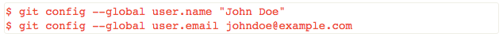
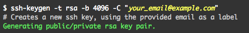
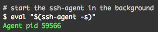
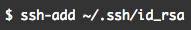
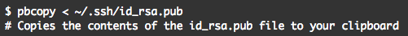
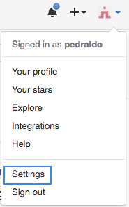
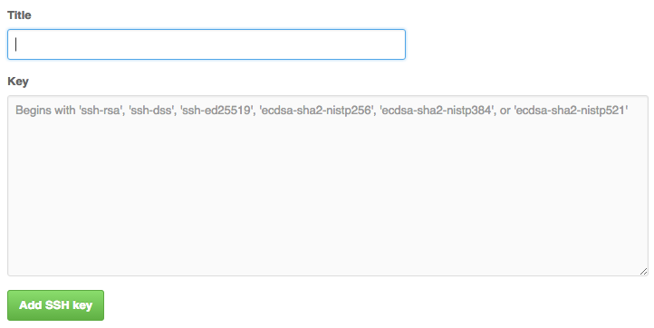

Configuration Git
Vous avez la possiblité de spécifier les paramètres de configuration de Git grâce à la commande git config. Nous vous conseillons encore une fois de configurer Git après avoir créer votre compte Github, dans le but d’avoir certaines configurations similaires.
Grâce à cette commande et aux divers paramètres qu’elle propose, il possible de configurer beaucoup de paramètres dans le but de personnaliser votre utilisation de Git, principalement au niveau client. Dans notre cas, nous allons vous présenter quelques configurations qui sont basiques et pratiques pour une première utilisation de Git.
Configuration du nom et de l’adresse mail associée à Git
La première chose à faire est de configurer votre nom est votre adresse email. Il est donc conseillé de renseigner votre prénom et votre nom (pour le nom), et la même adresse email que vous avez resneigné sur Github. Voici un exemple :

Si vous souhaitez afficher les configurations globales, utiliser la commande git config --global
Configuration de la couleur du texte dans le terminal
Une configuration plutôt utile que vous pouvez mettre en place est la coloration syntaxique liée à git. Différents codes couleur seront affectés en fonction de l’état de versionage d’un fichier (commité ou non, en attente de push). Vous comprendrez ces notions dans la suite de ce guide.
En attendant voici la commande pour activer la coloration syntaxique :
Génération des clés publiques SSH
Les clés SSH sont un moyen d'identifier les ordinateurs de confiance sans impliquer les mots de passe. Les serveurs Git utilisent ce genre d’authentification. Vous pouvez générer une clé SSH et ajouter la clé publique à votre compte GitHub en suivant les procédures décrites dans cette section.
Si vous souhaitez en savoir plus si le concept et l’utilisation des clés SSH, voici un lien utile.
Le processus de génération de clé SSH est identique sur tous les systèmes d’exploitation.
Tout d’abord, vérifiez que vous n’avez pas déjà créer de clé SSH auparavant.
Pour cela ouvrez un terminal (GitBash pour Windows) et taper la commande suivante :
ls -al ~/.ssh
Vérifiez si ce répertoire contient les fichiers suivants : id_dsa.pub ou id_rsa.pub.
Si ce n’est pas le cas, il faudra alors générer une clé SSH.
Pour générer une nouvelle clé SSH, tapez la commande suivante :

Vous serez amené à entrer une passphrase, il s’agit en fait d’une phrase familière pour vous qui vous servira de mot de passe. Ne l’oubliez pas ;).
Ajouter votre clé ssh au ssh-agent
Cette étape est nécessaire pour enregistrer votre clé ssh sur votre machine pour pouvoir la réutiliser. Tout d’abord, vérifiez si le ssh-agent est activé en tapant cette commande :

Vous devez voir apparaître le pid de votre ssh-agent.
Ensuite, il est temps d’ajouter votre clé au ssh-agent :

Entrer sa clé ssh sur Github
Maintenant il faut rentrer sa clé ssh sur Github pour que l’association entre votre machine et le serveur Github où se trouvera votre projet soit complète.
Pour ajouter votre clé il faut déjà la copier. Vous pouvez l’afficher et la copier à la main mais il existe une commande qui vous permettra de la copier plus simplement :

Rendez-vous maintenant sur votre compte Github.
En haut à droite de n’importe quelle page du site, cliquez sur votre photo associé à votre compte et cliquez sur “Settings”.

Vous arriverez alors sur la page des paramètres de votre compte Github.
Dans la barre de navigation latérale sur la gauche de la page, cliquez sur “SSH and GPG keys”.
Dans la partie SSH Keys se trouvant sur la nouvelle page sur laquelle vous venez d’arriver, cliquez sur “New SSH Key”. Vous verrez alors un formulaire s’afficher un peu plus bas dans la page tel que celui-ci :

Dans le champ titre, entrez un titre correspondant à l’utilisation de votre clé.
En effet ce titre peut s’avérer important car vous pouvez associer plusieurs clés SSH pour un compte Github (pour avoir plusieurs accès autre que seulement celui de votre ordinateur par exemple).
Enfin, dans le champ Key, collez la clé que vous avez copiée précédemment grâce à la commande que nous vous avions indiquée.
Cliquez sur “Add SSH Key”.
Confirmez avec le mot de passe Github.
Votre clé est maintenant enregistrée sur Github.